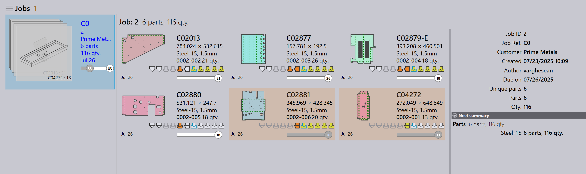

Import úloh
Import z csv alebo xlsx
Úlohy môžete tiež importovať v bežných textových formátoch
-
Kliknite na File → Open → Import zákaziek, zobrazí sa dialógové okno Open Folder. Vyberte
C:\Program Files\Metamation\Praxis\Samples\Jobs\C0\C0.csv.
-
Ak všetky diely existujú v umiestnení csv alebo v priečinkoch lookup folder, zobrazí sa okno nová zákazka so zoznamom všetkých dielov zodpovedajúcich poliam csv.
-
Chýbajúce diely sú ignorované a nezobrazia sa v okne nová zákazka.
-
Pôvodne je stav dielu Nascent.

-
Kliknite na OK, teraz sú diely importované do knižnice dielov. Validácia CAD, obrábanie pre ohyb a rezaciu inštanciu obrábania je dokončené, čo môže byť monitorované na obrazovke Pmonitor.

Vytvoriť prázdny dielec pre chýbajúce CAD súbory
Pri importovaní úloh pomocou tabuľky (.csv alebo .xlsx) môžete niekedy mať riadky odkazujúce na súbory CAD, ktoré nie sú dostupné v systéme.
-
Na riešenie tohto prejdite do závod → Nastavenia → Zákazka, v časti Import tabuľky povoľte Vytvoriť prázdny dielec pre chýbajúce CAD súbory

Keď je táto možnosť zvolená:
-
Ak chýba súbor CAD pre ľubovoľný riadok počas importu úlohy, systém automaticky vytvorí prázdny diel namiesto chýbajúceho súboru CAD.
-
V okne nová zákazka sú tieto chýbajúce diely vizuálne zvýraznené žltou farbou, aby indikovali, že priradený súbor CAD chýba.

-
Chýbajúci diel bude stále mať svoje namapované polia (ako názov dielu, materiál, hrúbka, množstvo atď.) z CSV. Avšak jeho stav dielu bude zobrazený ako Nascent, čo znamená, že je to len prázdny zástupný symbol bez skutočnej geometrie ešte.

To zabezpečuje, že import úlohy môže stále pokračovať bez chýb kvôli chýbajúcim súborom CAD — neskôr môžete aktualizovať alebo nahradiť prázdny diel správnym súborom CAD, keď bude dostupný.
Nezobrazovať dialógové okno Nová zákazka, ak tabuľka neobsahuje chybu
závod → Nastavenia → Zákazka → Import tabuľky→ Nezobrazovať dialógové okno Nová zákazka, ak tabuľka neobsahuje chybu
-
Keď je toto políčko začiarknuté, systém automaticky vytvorí novú úlohu bez zobrazenia dialógového okna New Job, ak tabuľka nemá žiadne chyby (žiadne chýbajúce diely, chýbajúce dátumy alebo neplatné dáta).
-
Keď je toto políčko nezačiarknuté, dialógové okno New Job sa vždy zobrazí na kontrolu a potvrdenie používateľa, aj keď tabuľka nemá žiadne chyby.
Prefer raw-material column over material + thickness
závod → Nastavenia → Zákazka→Prefer Raw-Material column over Material + Thickness
-
Keď je toto políčko začiarknuté, systém očakáva, že tabuľka použije stĺpec Raw-Material (napríklad Steel-20). To znamená, že typ materiálu a hrúbka by mali byť kombinované v jednej hodnote v jednom stĺpci.
-
Keď je toto políčko nezačiarknuté, systém očakáva, že tabuľka bude mať oddelené stĺpce pre Material a Thickness (napríklad Steel a 2.00). Systém ich kombinuje interne počas importu.

Sledovaný priečinok pomocou CSV/XLSX
-
V závod → Nastavenia→ Sledovanie zmien začiarknite Povoliť 'Živý priečinok' a Náhľad aj podpriečinkov.
-
Nastavte cestu sledovaného priečinka (UNC alebo mapovanú jednotku).
-
V Import tabuľky začiarknite Importovať tabuľky zo 'Živého priečinka'.

-
Vyberte Import zákaziek z možností Spreadsheet Import.
-
Skopírujte
C:\Program Files\Metamation\Praxis\Samples\Jobs\C0\C0.csva vložte ho do sledovaného priečinka. -
Systém skontroluje CSV a pokúsi sa automaticky vytvoriť úlohu.
-
Ak chýba súbor CAD, úloha nie je vytvorená, pretože požadované dáta CAD nie sú nájdené.
CAD lookup directory & recursive CAD search - nekonfigurované
-
V závod → Nastavenia → Zákazka → Import tabuľky, ak nie je nastavené CAD lookup directories a Použite rekurzívne vyhľadávanie CAD nie je použité, systém nehľadá súbory CAD automaticky.
-
Ak je začiarknuté políčko Vytvoriť prázdny dielec pre chýbajúce CAD súbory, úloha bude stále vytvorená aj keď chýbajú súbory CAD.
-
V tomto prípade budú všetky diely v úlohe vytvorené ako nascent (prázdne) diely — čo znamená, že nemajú geometriu, pretože súbory CAD neboli nájdené.

CAD lookup directory & recursive CAD search - nakonfigurované
Keď je Vyhľadávacie adresáre CAD nastavené na (C:\Program Files\Metamation\Praxis\Samples) a Použite rekurzívne vyhľadávanie CAD je povolené v závod → Nastavenia → Zákazka → Import tabuľky:
-
Systém automaticky prehľadáva špecifikovaný priečinok a všetky jeho podpriečinky pre požadované súbory CAD uvedené v tabuľke.
-
Vytvoriť prázdny dielec pre chýbajúce CAD súbory je tiež povolené, takže ak nie je stále nájdený žiadny súbor CAD, systém vytvorí prázdny diel ako zástupný symbol.